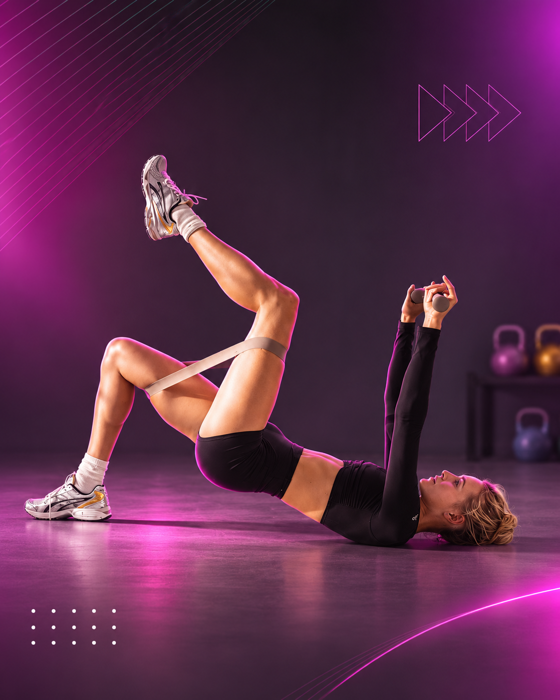
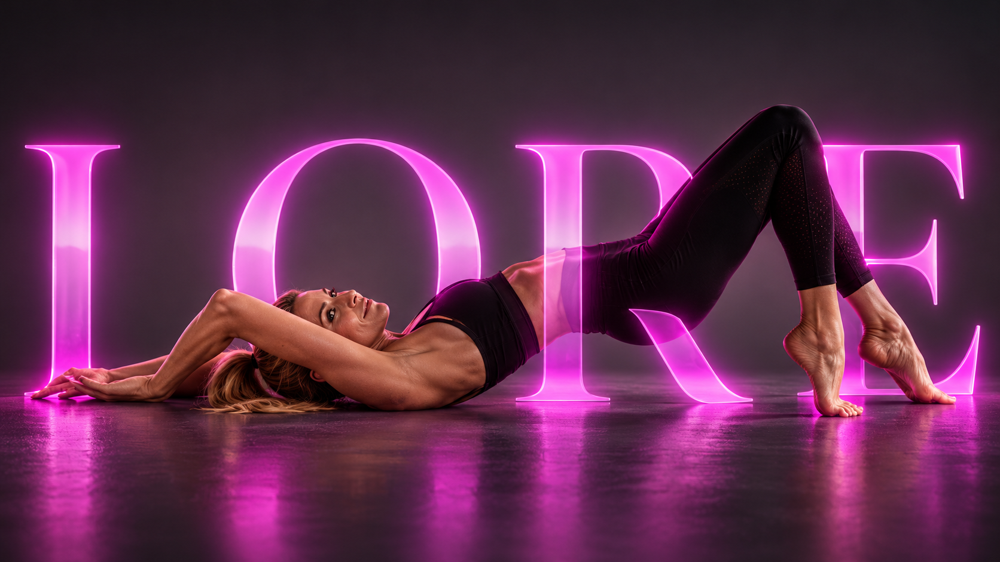
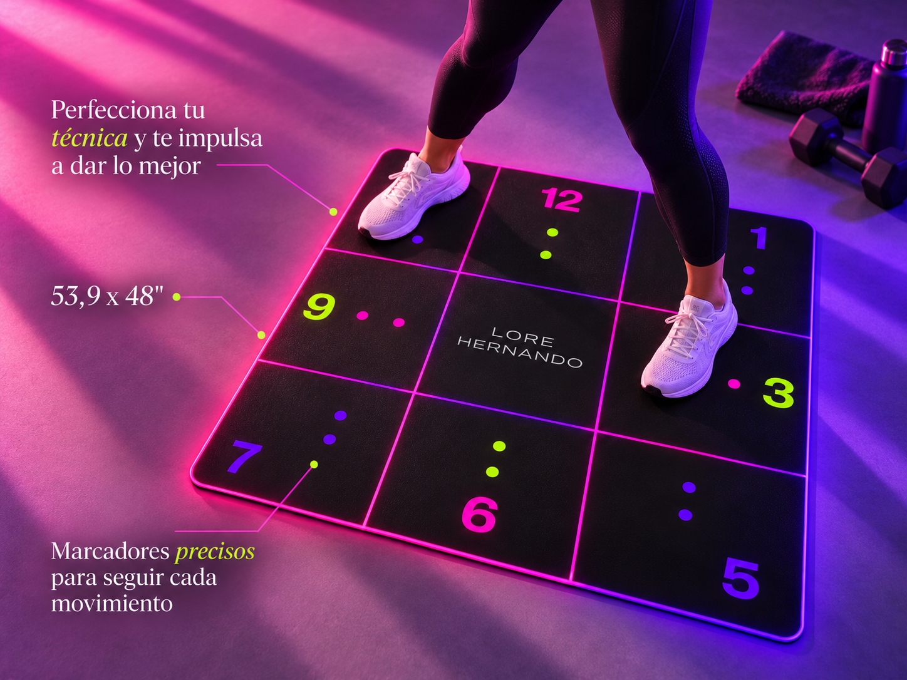
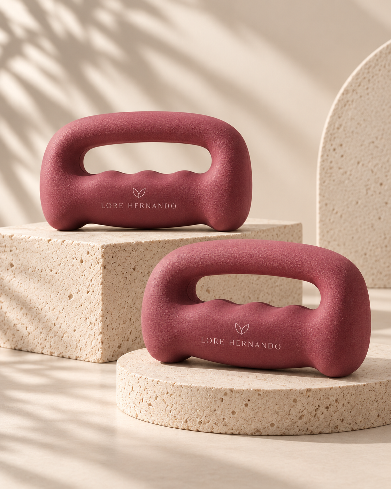
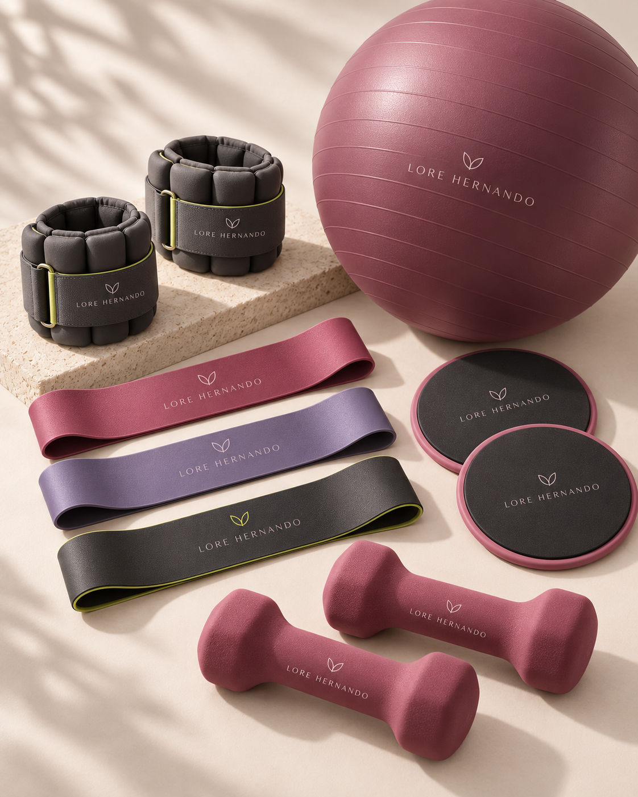
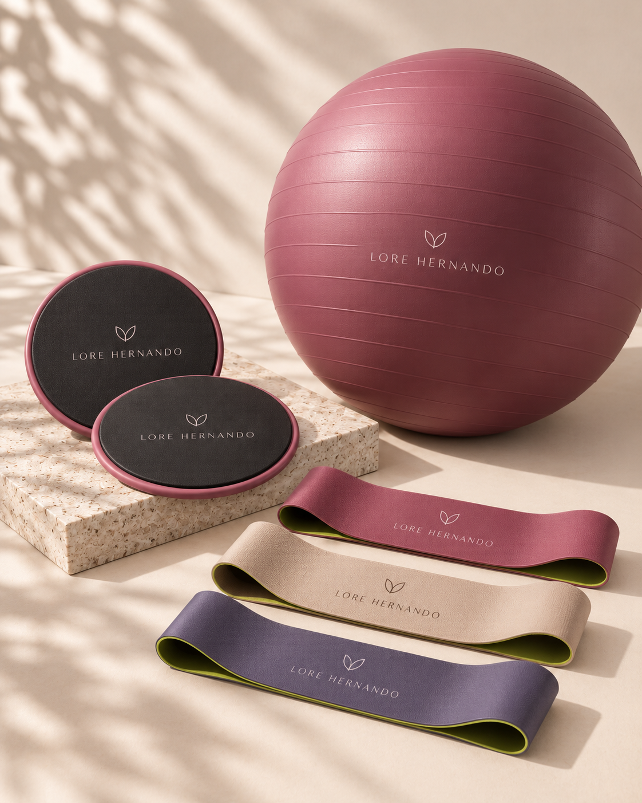
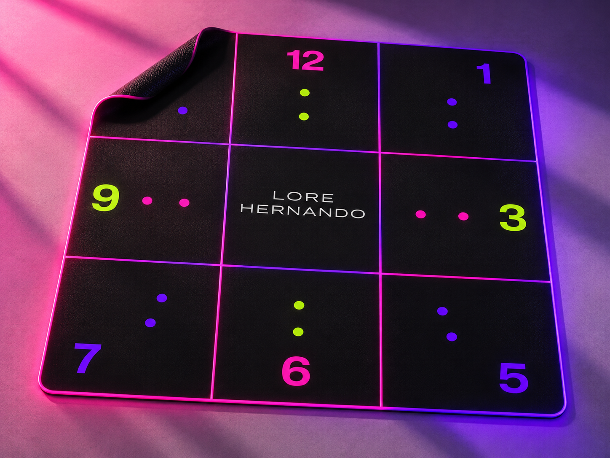
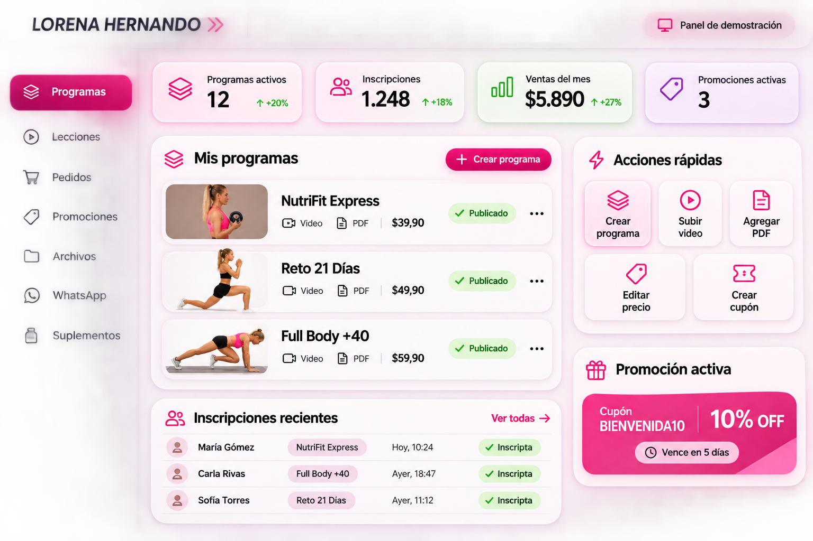

12+
años de experiencia en entrenamiento
- Conocimiento de las necesidades de mujeres +40
- Clases grabadas, videos, tips y materiales
- Experiencia diseñando retos y programas
- Relación real con tus alumnas y una manera propia de enseñar
El punto de partida: qué buscamos resolver, qué investigamos y cómo proponemos comercializar tus entrenamientos.
Hoy tu activo más valioso no es una página web ni una plataforma digital. Es tu experiencia como entrenadora, tu forma de enseñar y los programas que ya sabés crear. Nuestra función es ayudarte a transformar ese conocimiento en una propuesta organizada, atractiva y lista para llegar a más mujeres.
años de experiencia en entrenamiento
El problema no es que te falten clases. El desafío es convertirlas en programas que una mujer pueda comprender, comprar y seguir con facilidad.
Una página puede mostrar información. Un sistema comercial conecta la oferta, el proceso de compra y la experiencia de quien entrena. En NeuroTech trabajamos en ambas dimensiones: estrategia de negocio y ejecución tecnológica.

Ordenamos los tipos de programas, su destinataria, sus argumentos comerciales y qué conviene destacar primero.

Diseñamos cómo una mujer llega desde Instagram, descubre el programa, resuelve dudas y encuentra un camino simple para pagar.
Catálogo, cobros, acceso, clases en video, PDFs, avance de lecciones y gestión desde un mismo sistema.

Fichas reutilizables y capacitación para que publiques nuevos programas sin contratar un desarrollo cada vez.
Analizamos cómo organizan sus clases, qué duraciones y formatos ofrecen, cómo ayudan a elegir y qué ocurre después de la compra. Separé lo que observamos públicamente de lo que proponemos aplicar a tu negocio.
Una marca de entrenamiento con fundadora reconocible organiza recorridos para distintos niveles y vincula el movimiento con el equipamiento adecuado.
Una bienvenida «Empezá acá», calendarios con sesiones y descansos, clases cortas y extensas, equipos como bandas y mancuernas, y una web con páginas específicas para método, programas y comercio.
Cada programa tendrá ficha propia: a quién está dirigido, duración, tiempo por clase, nivel, materiales, modalidad y precio. Los accesorios aparecerán como ayuda opcional, nunca como el centro del negocio.
Otra propuesta combina una biblioteca amplia, un método definido, calendarios y guías digitales que dan sentido a la continuidad.
Los calendarios alternan sesiones, recuperación y descansos. Una guía de doce semanas organiza entrenamientos existentes, aunque reproducirlos requiere membresía activa, condición informada por la marca.
Vender programas con bienvenida, semanas, sesiones, materiales y cierre. Reutilizar videos con criterio profesional. Explicar desde el principio qué obtiene la alumna y cuánto tiempo tendrá acceso, sin suscripciones inesperadas.
El equipo de producto de una plataforma femenina investigó dónde abandonaban las nuevas usuarias y simplificó sus primeras decisiones.
El modelo publica opciones para principiantes de dos meses, express de tres meses y recorridos de mayor duración. La investigación de ingreso priorizó menos preguntas y una recomendación principal. No se publicó un porcentaje verificable de aumento de conversiones.
Un orientador breve por objetivo, experiencia, tiempo y equipamiento. Quien no quiera responder podrá ir directo al catálogo. Después de comprar, verá su próxima lección, no un laberinto de videos.
Una plataforma que comenzó con videos sencillos evolucionó hacia una experiencia coherente entre contenido, agenda semanal y acceso desde diferentes dispositivos.
Agenda semanal, clases por categorías, opción de continuar, series cortas y selección de productos externos. Su evolución histórica pasó de videos caseros a aplicación y luego a una experiencia web y móvil más completa.
«Mi entrenamiento» comenzará con tu programa activo, la siguiente sesión, el video y el PDF. La alumna podrá marcar su avance y encontrar otro programa cuando termine. Sin implementar una app nativa.
Estudiamos cómo presentan, venden y entregan el entrenamiento. La lección en común es que las mujeres no compran una carpeta de videos: eligen una profesional y un recorrido claro para entrenar.
Conocé cómo lo aplicamos ↗Una mujer llega porque quiere entrenar con vos, no porque necesite comprar una mancuerna o un suplemento. Por eso diseñamos el negocio alrededor de tus programas: su propósito, duración, forma de uso y continuidad.
Primero el entrenamiento. Después, si corresponde, el equipamiento, las guías y los productos que ayudan a realizarlo.
Un recorrido con sesiones ordenadas. Puede venderse como programa autónomo o como edición grupal con fecha y acompañamiento definidos por vos.
PROGRAMA PRINCIPAL · COMPRA INDIVIDUALSesiones agrupadas por semanas, objetivos y materiales. La progresión física y el nivel se establecen con tu criterio profesional.
PROGRAMA PRINCIPAL · A TU RITMOUna alternativa más extensa para otra necesidad o etapa, cuando tengas la metodología y los materiales adecuados para ofrecerla.
PROGRAMA PRINCIPAL · A TU RITMOReset de temporada, Mes de la Madre, reto de verano y nuevas ediciones. La plataforma te permitirá presentar cada oferta sin reconstruir el sistema.
CAMPAÑAS · CONTINUIDAD · PROMOCIONESLa alumna compra cuando quiere y accede después de la confirmación válida del pago. Sigue el orden de sesiones recomendado sin bloqueos diarios por fecha.
Tiene una fecha de inicio anunciada y puede incluir un enlace al grupo de WhatsApp, con reglas de acompañamiento definidas para esa edición.
Una alumna llega por tus clases. Los complementos se ofrecen únicamente si tienen sentido para ese entrenamiento.
El objetivo es que cada etapa tenga un próximo paso claro, sin obligarte a resolver por WhatsApp cada consulta, inscripción o envío de material.
Aprovechamos tus reels, clases y publicaciones de Instagram. Cada contenido puede invitar a conocer un programa; WhatsApp ayuda a compartirlo y resolver consultas puntuales.
↘El catálogo ordena la oferta. Cuatro preguntas sobre objetivo, experiencia, tiempo y equipamiento orientan hacia una primera opción: menos videos para comparar y menos dudas antes de decidir.
↘Transferencia directa: sin comisión de Mercado Pago, con verificación de acreditación. Link de Mercado Pago: pago guiado y cómodo, con comisión según el plazo que elijas.
↘Con el pago confirmado, ingresa a su programa y encuentra la primera clase, las guías y el orden de sesiones. Sabe qué hacer hoy y cómo continuar, sin buscar entre publicaciones.
↘Al volver, retoma donde quedó. Cuando completa un recorrido, puede descubrir el siguiente programa adecuado y mantener el vínculo con vos sin empezar de cero.
 Imagen ilustrativa: Anna Shvets / Pexels
Imagen ilustrativa: Anna Shvets / PexelsUna mujer ve una clase de Lorena en Instagram. Llega a una página donde conoce la duración, el nivel, lo que incluye y el equipamiento del programa. Puede orientarse en cuatro preguntas, comprar y entrar cuando el pago está confirmado. Después encuentra directamente su primera lección.
Otro día vuelve y retoma. Al finalizar, descubre si existe un siguiente recorrido adecuado para ella.
Explorá el recorrido completo ↗Podés priorizar la transferencia para evitar comisiones de procesamiento, y ofrecer Mercado Pago a quienes prefieran pagar con un enlace y medios de pago conocidos. Vos elegís la combinación según costos y comodidad.
La estrategia es ofrecer opciones sin complicar la compra. Las tarifas mostradas son referencias públicas de Link de pago en Argentina, no una cotización para la cuenta de Lore. Pueden variar por provincia, medio de pago y plazo; cuotas, impuestos y retenciones pueden sumar costos. La transferencia directa no genera comisión de Mercado Pago, aunque pueden existir otros cargos o impuestos. La comisión de Mercado Pago la cobra ese proveedor, no NeuroTech. Consultar comisiones oficiales de Mercado Pago ↗
Lo que sigue es una demostración interactiva de cómo podrían ver y recorrer la web tus alumnas. No es una tienda operativa.
Una muestra visual con tu identidad, tu contenido y tus experiencias reales. Es una propuesta de diseño, todavía no una tienda con inscripciones o pagos habilitados.
Entrenamiento, hábitos y bienestar. Una invitación a moverte, reconectar con vos y sumar energía a tu día a día.
Entrenamiento, motivación y hábitos para acompañarte en cada etapa, con propuestas de Lore Hernando.
Explorá el universo de clases y experiencias de Lore.
Programas guiados por Lore Hernando para mujeres +40.

* Los tres niveles de entrenamiento son una propuesta de organización pendiente de aprobación. El acceso 24/7 es un objetivo funcional de la plataforma, no una prestación implementada. Las modalidades indicadas son parte de la propuesta de plataforma y deben confirmarse antes del lanzamiento.
Elegí una propuesta para descubrirla. Los programas anteriores y las nuevas ideas se presentan como muestra; próximas fechas a confirmar.
 LORE · 01
LORE · 01Un desafío para mujeres que combina entrenamiento, hábitos, motivación y acompañamiento grupal.
En ediciones anteriores duró tres semanas. Modalidad, precio y nuevas fechas por confirmar. LORE · 02
LORE · 02Una propuesta digital con metas y pequeños retos para incorporar movimiento a la rutina.
Edición histórica online. Próximas fechas y condiciones por confirmar.
LORE · 03Una propuesta conceptual orientada a la fuerza, el movimiento y los hábitos sostenibles.
Concepto estratégico de Lore Hernando, todavía no aprobado ni comercializado por Lore.Movimiento, yoga, respiración, meditación y naturaleza en un espacio para reconectar.
Se realizaron experiencias en Valle Grande. Nuevas fechas por confirmar.
Creo en el movimiento y en construir hábitos que podamos sostener. Mis desafíos y experiencias son una invitación a dedicarte un momento, entrenar y reconectar con vos.
«No se trata de tener tiempo, se trata de sacar tiempo».Empezá a descubrir mis propuestas ↗
Tu espacio de movimiento puede empezar con lo simple. Lo importante es encontrar un programa que se adapte a tu momento.
Explorar experiencias ↗
-25%

-19%

-22%Precios en pesos argentinos exclusivamente ilustrativos. Las rebajas también son ejemplos, no ofertas vigentes ni productos habilitados para comprar.
El equipamiento específico se indica en cada programa. Los accesorios acompañan, pero no reemplazan las clases.
Lore ha desarrollado desafíos online y experiencias presenciales. La modalidad se informará para cada nueva edición.
Esta es una muestra del sitio. Las fechas, condiciones y precios deberán confirmarse con Lore antes de anunciar una inscripción.
Depende de la experiencia elegida. Los materiales requeridos se detallarán en cada programa.
Consultá por próximas ediciones. Fechas, precios y disponibilidad a confirmar con Lore.
Vista conceptual incluida en la propuesta de NeuroTech. La web mostrada no procesa pagos, no toma inscripciones y no confirma fechas ni disponibilidad.
A partir de ahora volvemos a la propuesta comercial: qué herramientas y funcionalidades se implementan, cómo se administra la plataforma y cuáles son los entregables, costos y condiciones.
Después de configurar el sistema y recibir capacitación, vas a poder publicar tus propios programas sin depender de NeuroTech para cargar cada video o modificar cada precio. Configuraremos el sistema y te capacitaremos para que gestiones tus contenidos y ventas.
Vista conceptual basada en WordPress, Tutor LMS gratuito y WooCommerce; no implica desarrollar un panel nuevo desde cero. En Tutor LMS Free, cada curso pago debe asociarse manualmente con su producto en WooCommerce.

Además de tus clases, este espacio puede mostrar productos de nutrición y bienestar que decidas recomendar. Como ejemplo, presentamos Nu Bi (piña-coco), un suplemento alimenticio de Pharmanex / Nu Skin con prebióticos y postbióticos.
Una propuesta complementaria
Los suplementos no reemplazan el entrenamiento ni una alimentación variada y equilibrada.
Información transparente
Cada producto tendrá su nombre, ingredientes, advertencias y enlace a la ficha del proveedor.
Consulta al proveedor
La compra y disponibilidad se consultan en una tienda externa, sin prometer stock ni precios desde esta demostración.
Producto ilustrativo. El uso de suplementos debe consultarse con un profesional de salud. No destinado a embarazadas, personas en lactancia ni niños. Nu Bi es una marca de Nu Skin, no una línea propia de Lore o NutriFit.

La alumna verá las clases dentro de su programa, sin importar qué proveedor de video elijas. Comparamos tres alternativas con sus condiciones reales.
Elegí una alternativa para ver su funcionamiento, ventajas, riesgos y costos debajo.
Las lecciones pueden incluir un reproductor de YouTube. El video no aparece públicamente en búsquedas, pero cualquiera con el enlace podría abrirlo y compartirlo.
Funciona bien como archivo de videos, PDFs y guías de Lorena. Puede intentarse insertar un video en la web, pero Drive no está diseñado como plataforma de streaming comercial.
Servicio especializado para reproducir entrenamientos dentro de la plataforma, con opciones adicionales de control de acceso. Cobra almacenamiento y datos transferidos cuando las alumnas ven los videos.
Adecuado para: programas pagos con necesidad de mayor control y crecimiento.
YouTube no listado no significa privado. Los enlaces pueden compartirse y el uso comercial del reproductor debe cumplir sus condiciones. Drive puede presentar restricciones de permisos y reproducción. Los valores de Bunny son estimativos y se confirmarán al contratar. Políticas de YouTube · Precios de Bunny.
La estrategia no termina en un informe. La transformamos en páginas, flujos de compra y un espacio donde las alumnas puedan entrenar.
Relevamos programas, materiales, tipo de alumna, preguntas frecuentes y obstáculos para comprar. Lorena valida el método deportivo.
Matriz de productos, ficha modelo y recorrido desde la primera visita hasta el inicio del entrenamiento.
Inicio, presentación, programas, fichas individuales, condiciones, preguntas frecuentes y navegación móvil.
Selector básico de cuatro preguntas con reglas comerciales validadas y salida al catálogo si no hay coincidencia.
WooCommerce, Mercado Pago y transferencia con control manual. Pruebas de estados de pago y acceso a cada curso.
Tutor LMS gratuito, videos externos, sesiones por semanas, PDFs, lecciones completadas y área de alumna.
Enlaces de WhatsApp para retos acompañados y acceso a equipamiento o suplementación mediante proveedores externos.
Configuración y prueba con material de muestra autorizado. Capacitación para cargar y vender próximos programas.
Documentación operativa, cuentas principales a nombre de Lorena, accesos de administración y verificación de respaldos y opciones de exportación.
No forman parte de esta implementación: grabación de clases, creación del método deportivo, nutrición personalizada, app nativa, membresías recurrentes, liberación diaria automática de sesiones, analítica comercial a medida, IA entrenadora, gestión permanente de publicidad o redes, ni tienda física con stock y envíos. Los cambios que excedan el alcance aprobado se presupuestan aparte; durante los 60 días posteriores a la entrega están incluidos los ajustes menores y las correcciones acordadas en el período de acompañamiento.
✓ Catálogo y fichas legibles desde celular
✓ Selector con reglas aprobadas
✓ Compra aprobada que habilita el curso
✓ Transferencia pendiente sin acceso automático
✓ Video, PDF y progreso de una clase de prueba
✓ Creación y edición de cursos tras capacitación
✓ Cuentas y respaldos documentados
El desarrollo incluye las pruebas técnicas previas. Después de la entrega comienza un acompañamiento de 60 días, con capacitaciones y ajustes incluidos.
Plazo objetivo de desarrollo: 2 a 3 meses desde el inicio efectivo, sujeto a materiales, accesos, definiciones y validaciones entregados por Lorena. Los 60 días de acompañamiento se cuentan desde la entrega y están incluidos en la inversión inicial.
La administración utiliza WordPress, Tutor LMS Free y WooCommerce; no se desarrollará un panel personalizado desde cero. En Tutor LMS Free, cada curso comercializado requiere crear y asociar manualmente su producto WooCommerce. Esto formará parte de la capacitación.
Después del lanzamiento, NeuroTech puede acompañarte para preparar nuevos retos, revisar qué ofertas generan interés, organizar campañas y mejorar cómo comunicás tus programas. Es un servicio comercial opcional, diferente del mantenimiento técnico.
Estas actividades tienen objetivos y presupuesto propios. No prometen ventas garantizadas ni están incluidas en los $110.000 mensuales de mantenimiento técnico.
Después de conocer el alcance, estas son las modalidades de pago, el mantenimiento y los gastos externos para poner en funcionamiento la plataforma.
La implementación, el mantenimiento y los servicios contratados a terceros se presentan separados para que puedas decidir con toda la información.
Consultoría comercial inicial acotada, mapa de productos, diseño de experiencia, web, cursos, selector básico, compras, accesos y pruebas técnicas previas; incluye además 60 días de pruebas y ajustes posteriores a la entrega y 3 capacitaciones de hasta 90 minutos, virtuales o presenciales.
Elegí cómo organizar la inversión. Ambas modalidades corresponden a la misma implementación.
ARS 1.750.000 al inicio del proyecto y ARS 1.750.000 contra puesta en marcha y entrega acordada.
Total: ARS 3.500.000, sin interés por financiación.100% financiado en 6 cuotas mensuales estimadas. Primera cuota a los 30 días de formalizar el acuerdo y las demás cada 30 días.
Total estimado: ARS 4.259.440.Simulación orientativa sobre ARS 3.500.000, con sistema francés, 6 cuotas mensuales vencidas, TNA fija de referencia del 71% y tasa mensual nominal de 71% / 12 = 5,9167%. La cuota teórica es ARS 709.906,69 y se muestra redondeada a ARS 709.907; el total teórico es ARS 4.259.440,11. El cronograma definitivo ajustará el redondeo de cuotas.
Como referencia se utiliza la TNA publicada por Banco Nación para su producto Nación Destino Libre, consultada el 01/11/2026. Esta es una financiación comercial propia de NeuroTech, no un préstamo bancario, ni implica que Banco Nación financie este proyecto. No se trasladan automáticamente el CFT, seguros ni otros cargos de un préstamo personal a esta simulación. Las condiciones, impuestos que correspondan, fechas y tasa aplicable se confirmarán por escrito antes de contratar.
Fuente de referencia: Banco Nación · Nación Destino Libre ↗.
* Valores de referencia al 01/11/2026. Sujeto a aceptación y formalización de condiciones comerciales por NeuroTech. No incluye servicios de terceros.
El abono mensual comienza una vez finalizados los 60 días corridos de capacitación, pruebas y ajustes incluidos desde la entrega. Forma parte de la continuidad técnica propuesta y se factura por separado del desarrollo inicial.
El mantenimiento tiene un incremento del 15% cada 6 meses, calculado sobre el abono vigente. El valor inicial de ARS 110.000/mes se mantiene durante los primeros seis meses de servicio; a partir del mes 7 pasa a ARS 126.500/mes y se actualiza nuevamente cada seis meses con el mismo criterio. Los incrementos no son retroactivos.
Revisión técnica mensual de WordPress, WooCommerce y Tutor LMS; actualizaciones controladas; mantenimiento correctivo y corrección de errores técnicos atribuibles a componentes configurados por NeuroTech; comprobación del funcionamiento general, compras y accesos; revisión ordinaria de las integraciones incluidas; supervisión del mecanismo de copias de seguridad y análisis de errores registrados cuando haya incidentes.
Incluye hasta 1 hora mensual de intervención técnica para ajustes menores o incidencias, no acumulable, en horario laboral. Los respaldos y su restauración están sujetos al servicio de hosting contratado.
Funcionalidades, módulos o integraciones nuevas; rediseños importantes; migraciones extraordinarias; carga o edición de cursos, videos y materiales; producción audiovisual; cambios estructurales derivados de proveedores externos; asistencia ilimitada, atención 24/7 ni tiempos de respuesta garantizados por un SLA especial.
Tampoco incluye dominio, hosting, almacenamiento o reproducción de videos, servicios de terceros ni comisiones de cobro. Esos conceptos se abonan por separado.
Durante los 60 días corridos posteriores a la entrega se incluyen 3 capacitaciones personalizadas de hasta 90 minutos cada una, virtuales o presenciales y coordinadas previamente, pruebas de compra, inscripción y acceso, resolución de dudas operativas, corrección de errores atribuibles a la implementación y ajustes menores dentro del alcance aprobado. No incluye nuevos módulos, rediseños generales ni cambios sustanciales. El abono mensual de mantenimiento comienza una vez terminado este período, sin perjuicio de las obligaciones legales de garantía que correspondan.
La plataforma, los contenidos y las cuentas contratadas a nombre de Lorena permanecen bajo su control. Podrá contratar a otro proveedor para administrarlos. NeuroTech facilitará los accesos autorizados y la documentación técnica disponible necesaria para la continuidad. Los nuevos trabajos se presupuestarán por separado y Lorena deberá mantener activos los servicios externos necesarios; esto no limita las obligaciones legales que correspondan.
El dominio, el hosting, los videos y las comisiones de cobro son servicios distintos de la implementación y del mantenimiento. Se contratan y pagan a nombre de Lorena. A continuación explicamos qué son y cuánto podrían costar.
Sus programas, videos, PDFs, precios, promociones y enlaces habituales, luego de la capacitación.
No incluye app nativa, métricas corporales, bloqueo por calendario, desarrollos especiales ni garantía universal para Smart TV.
Estos importes no los cobra NeuroTech. Son pagos a proveedores que mantienen la web y los entrenamientos disponibles. Las cuentas y las contrataciones estarán a nombre de Lorena.
El hosting es el espacio donde viven los archivos y la base de datos de tu web: programas, alumnas, inscripciones y operaciones que almacena la plataforma. Los videos, pagos y otros servicios pueden guardar información en proveedores diferentes.
El dominio, el hosting y las cuentas principales se contratarán a nombre de Lorena y serán abonados directamente por ella. Tendrá sus propias credenciales y permisos de administración; NeuroTech utilizará accesos técnicos autorizados para implementar y mantener el sistema.
Si el vínculo con NeuroTech finaliza, Lorena conserva sus cuentas, sus contenidos y el control de su información. Puede contratar a otro profesional para administrarlos. Para que la plataforma siga operativa deberá mantener los servicios externos activos y disponer de administración técnica.
Es el nombre que una alumna escribe para entrar a la página, por ejemplo tumarca.com.ar. Se registra en NIC Argentina y se renueva cada año.
Equivalente: ARS 708 por mes, aunque se paga anualmente.
Recomendación: un dominio .com.ar a nombre de Lorena, sujeto a disponibilidad.
Ver arancel oficial ↗Es el servidor donde se alojan la web, el catálogo, los accesos de las alumnas y los datos de WooCommerce y Tutor LMS. No es lo mismo que guardar los videos.
BanaHosting Professional: USD 75,06 por año (≈ ARS 117.094 anuales al dólar vendedor BNA de ARS 1.560). Puede tener condiciones impositivas y de pago adicionales.
Recomendación inicial: Professional, con los videos fuera del hosting. Su capacidad real debe probarse con la cantidad prevista de alumnas.
Ver plan y precio oficial ↗Los videos se alojan en un servicio especializado y se reproducen dentro de la lección. Así no se llena el almacenamiento del sitio ni se depende del hosting para enviar cada video.
Ejemplo Bunny Stream: USD 1,25 por mes para 30 alumnas, 7 horas de reproducción mensual por alumna y 20 GB guardados. Cambia con la calidad y el consumo.
Se recomienda evaluar Bunny Stream para cursos pagos; YouTube no listado puede ser alternativa inicial con menos control de acceso. Google Drive no es la primera opción para streaming.
Ver precios oficiales ↗Mercado Pago descuenta una comisión por cada operación aprobada; no es un abono mensual fijo. La transferencia bancaria directa no tiene comisión de Mercado Pago.
Referencias publicadas para Link de Pago según plazo de acreditación: 35 días 1,49%; 18 días 3,39%; 10 días 4,39%; inmediato 6,29%. Pueden corresponder impuestos, percepciones y costos por cuotas adicionales.
La modalidad definitiva debe verificarse en la cuenta y en el método de integración que se utilice en WooCommerce; las tarifas de Link de Pago no garantizan las del checkout.
Ver tarifas publicadas ↗Dominio prorrateado + BanaHosting Professional + escenario de Bunny Stream indicado arriba. No es una factura mensual única: dominio y hosting se estiman con pago anual, Bunny se factura por consumo. No incluye comisiones por ventas, impuestos o recargos por pagos internacionales, renovación a otras tarifas, ni el mantenimiento de NeuroTech de ARS 110.000/mes, cuyo abono comienza después de los 60 días incluidos.
Precios consultados el 01/11/2026: NIC Argentina .com.ar ARS 8.500/año; BanaHosting Professional USD 75,06/año; Bunny Stream desde USD 0,01/GB almacenado y USD 0,005/GB distribuido (mínimo USD 1/mes). Para convertir USD a pesos se utilizó solo como referencia el dólar billete vendedor Banco Nación de ARS 1.560 al 30/10/2026, última jornada hábil anterior. La conversión es ilustrativa: el cargo efectivo puede incluir tipo de cambio del medio de pago, impuestos y percepciones.
El ejemplo de Bunny considera 30 × 7 = 210 horas vistas, aproximadas como 210 GB transferidos a USD 0,005/GB = USD 1,05, más 20 GB almacenados a USD 0,01/GB = USD 0,20. Total USD 1,25/mes. Si la calidad, las horas o las alumnas aumentan, el costo también puede crecer. No hay una estimación contractual de consumo sin pruebas.
El precio de hosting indicado corresponde al pago anual publicado, no a una cuota mensual contratada. Antes de elegir se validarán recursos de WordPress, accesos concurrentes, backups, renovación, impuestos y políticas comerciales. Como alternativa con facturación local, DonWeb publica planes WordPress en ARS con precios variables por plazo y promociones; tampoco debe compararse un descuento plurianual con un pago mensual sin aclararlo.
Fuentes: NIC Argentina · BanaHosting · Bunny Stream · Banco Nación · DonWeb.
La transferencia bancaria directa requiere comprobar la acreditación antes de habilitar el curso. El funcionamiento de nuevas ediciones grupales con inscripciones independientes y el tratamiento de reembolsos se validarán en las pruebas de configuración.
Vos aportás lo esencial: tu experiencia, las clases y el vínculo con las mujeres que entrenan con vos. NeuroTech aporta el diagnóstico, la estrategia comercial, la experiencia digital y la tecnología para que tus programas se presenten, vendan y utilicen en un mismo lugar.
La propuesta interactiva es demostrativa. La contratación y la puesta en marcha se formalizan por separado.El precio, contenidos y cronograma real los define Lorena. Este ejemplo muestra el tipo de información que podrá ofrecer en cada ficha.